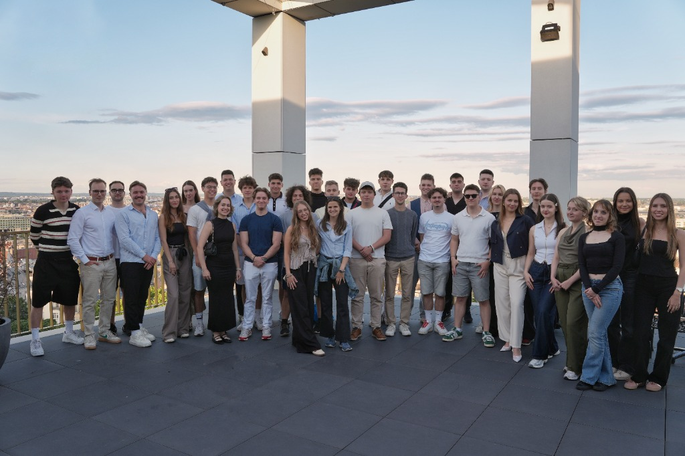
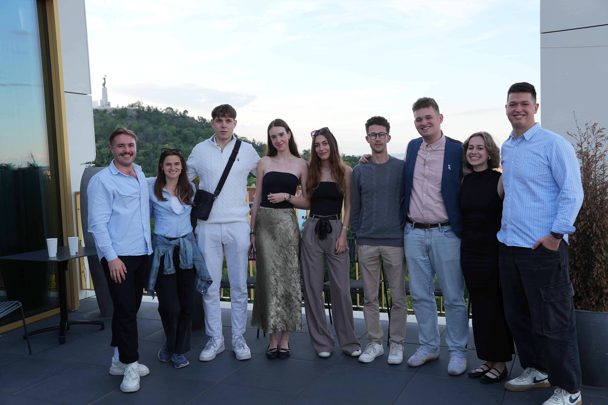
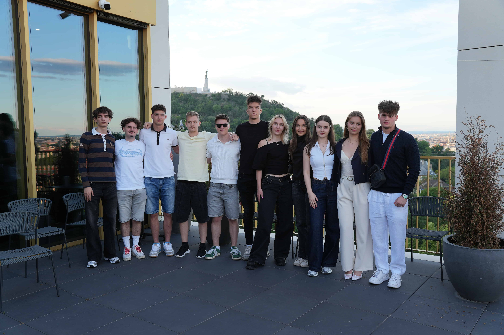
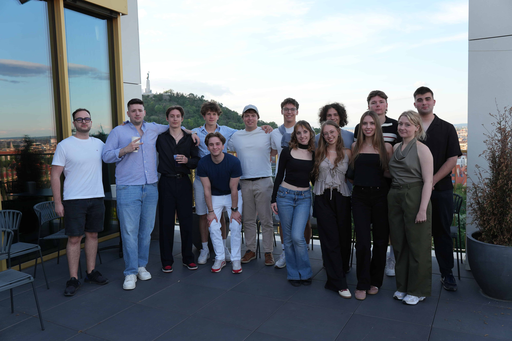
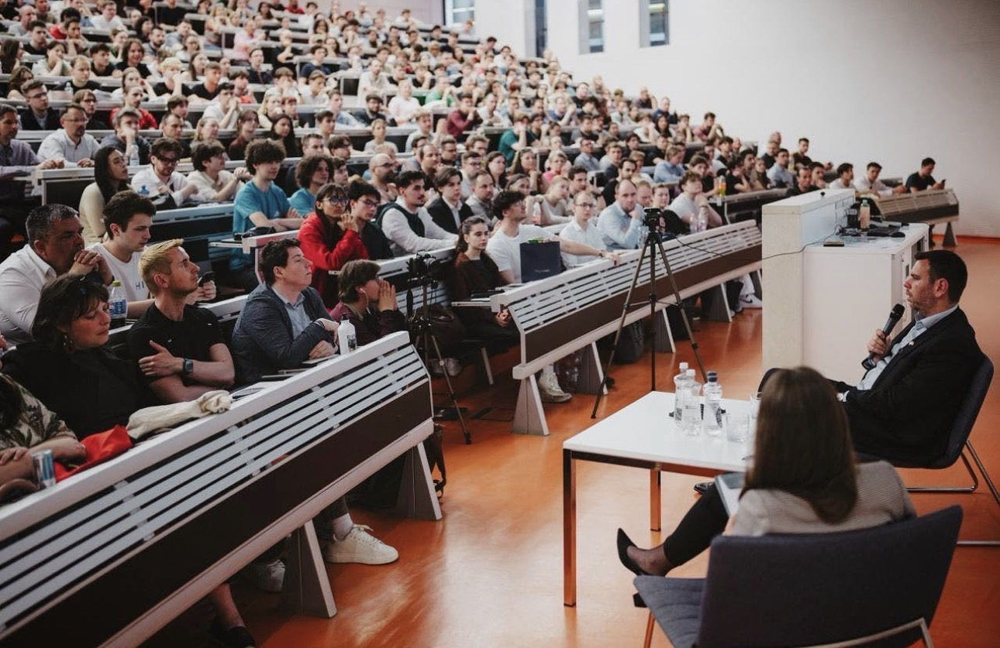

Menü
Az ABOVE olyan szakmai közösség, ahol a legtehetségesebb és legambiciózusabb fiatalokkal dolgozunk együtt európai kihívások megoldásán. Célunk, hogy új generációs európai vezetőket neveljünk az ifjúsági részvétel és a vállalkozói gondolkodásmód erősítésével. Alapköveinket képezik a rendszerszemlélet, az innováció, és a mentorálás, amelyek biztosítják a strukturált, de egyben agilis működést. Sokszínű tevékenységeinkel alulról szerveződő kezdeményezéseknek adunk teret és hátteret.

Eredményeink
Nemzetközi cseréken és képzéseken velünk utazók.
Rendszeresen meghirdetett új európai projektek.
Strukturált működés, agilis szemlélet és magas minőségű képzések.
Több éves tapasztalat nemzetközi projektekben.


Hiszünk egy olyan Európában, ahol a kritikus gondolkodás, a technológiai fejlődés és az emberi összefogás hatására megszűnnek a tudásbeli szakadékok. Küldetésünk, hogy a magyar fiatalokat olyan készségekkel ruházzuk fel, amelyekkel magabiztosan és etikusan irányíthatják a jövő változásait.
A szekció az ABOVE emberi oldaláért felel: aktív, összetartó közösséget épít és biztosítja, hogy a szervezet tehetséges új tagokkal és nemzetközi projektrésztvevőkkel bővüljön. Feladatköre a teljes tagi életutat lefedi, az első találkozástól a recruitment folyamaton és integráción át a hosszú távú elköteleződésig. Emellett koordinálja az Erasmus+ és egyéb nemzetközi lehetőségeket, valamint rendszeres belső eseményekkel és mentorálással gondoskodik a közösség megtartásáról.

5 Projektcsapat
Közösségépítés & toborzás
Projektcsapatok
A Corvinus Egyetem diákszervezeti akkreditációjának koordinálása: követelmények nyomon követése, dokumentáció, és a lehetőségek maximális kihasználása az Events Management és Marketing csapatokkal együttműködve.
A szervezet „lelke": méri a tagok elégedettségét és motivációját kérdőívekkel, interjúkkal és adatalapú elemzésekkel. Kezeli az exit interjúkat, visszajelzéseket, és biztosítja, hogy minden tag megtalálja a helyét.
Havonta elkészíti a szervezeti és szekciós hírleveleket, valamint a grafikus eseménynaptárat tréningekkel, rendezvényekkel és meetingekkel, hogy minden tag naprakész legyen.
Az Erasmus+ KA1 és más nemzetközi mobilitási programok résztvevőinek toborzása, kiválasztása és koordinálása. Kapcsolatot tart partneriskolákkal és biztosítja a legmegfelelőbb résztvevők kiválasztását.
Csapatépítő programok, társasestek, sportprogramok és informális találkozók szervezése. Új közösségi hagyományokat alakít ki, támogatja az új tagok beilleszkedését, és biztosítja, hogy az ABOVE mindenki számára inspiráló közösséget jelentsen.

4 Projektcsapat
Brand & kommunikáció
A szekció az ABOVE külső megjelenéséért, kommunikációjáért és márkájának építéséért felel. Menedzseli az online jelenlétét, Instagram, TikTok, Facebook és weboldal, rendszeres tartalomgyártással és adatvezérelt kampányokkal. Gondoskodik a projektek disszeminációjáról, az egyetemi láthatóságról, a merchandise-okról és a vállalati együttműködésekről.
Projektcsapatok
Rendezvényeken és projektek során készült felvételek forgatása, kreatív koncepciók kidolgozása és professzionális utómunka. Hiteles videókkal erősíti a márkaépítést és az online jelenlétet.
Egységes arculatú kreatív tartalmak tervezése és elkészítése, közösségi médiafelületek kezelése, események és sikerek kommunikálása, valamint elérések elemzése a hatékonyabb kommunikáció érdekében.
Az ABOVE weboldalának folyamatos fejlesztése és naprakészen tartása: tartalmak frissítése, új funkciók bevezetése és technikai támogatás a professzionális online megjelenés érdekében.
Vállalati együttműködések kialakítása terméktámogatásra és természetbeni hozzájárulásokra. Potenciális partnerek felkutatása, tárgyalások és hosszú távú kapcsolatépítés a rendezvények színvonalának emeléséért.
Az ABOVE projekt- és partnerkapcsolati motorja. Feladata új hazai és nemzetközi együttműködések kialakítása, pályázati lehetőségek felkutatása, projektek létrehozása és a futó projektek koordinálása. Aktívan építi az Erasmus+ partnerhálózatot, kezeli a KA152/153/154 és KA2 pályázatokat, és gondoskodik a hazai partnerségekről, valamint az ABOVE hosszú távú finanszírozási stratégiájáról.

6 Projektcsapat
Projektek & partnerségek
Projektcsapatok
Nemzetközi partnerkapcsolatok fejlesztése: Erasmus+, CERV, Visegrad Fund és egyéb együttműködések kiépítése, partnerkereső rendezvényeken való részvétel és a hálózat folyamatos bővítése.
Az ABOVE első saját nemzetközi nyári táborának megtervezése és megvalósítása: angol nyelvű program, amely nyelvtudást fejleszt, európai értékeket ismertet és közösségi élményt nyújt.
Hazai pályázati lehetőségek figyelése, elemzése és a releváns pályázatok elkészítése és koordinálása, hogy az ABOVE minél több hazai forráshoz jusson a stabil működés érdekében.
Az ABOVE hosszú távú önfinanszírozásának megalapozása: új piaci lehetőségek kutatása, üzleti modellek kidolgozása és bevételtermelő kezdeményezések, kampányok, szolgáltatások, innovatív projektek, megvalósítása.
Hazai partnerhálózat építése és koordinálása: középiskolák, civil szervezetek, önkormányzatok és szakmai partnerek bevonása a szervezet ismertségének növelése és a fiatalok elérése érdekében.
Az European Solidarity Corps program bevezetésének előkészítése: a program feltérképezése, szervezeti folyamatok kidolgozása és partnerkapcsolatok kiépítése, hogy az ABOVE fogadó- és küldőszervezetként részt vehessen.

4 Projektcsapat
Rendezvények & események
Az ABOVE rendezvényeinek operatív és szervezési központja. Koordinálja a recruitment megjelenéseket, féléves eseményterveket készít, és kezeli a nyilvános programok, belső tréningek és partnerrendezvények teljes szervezési folyamatát, a helyszínfoglalástól a lebonyolításig. Összekötő szerepet tölt be a szekciók között, a partnerségeket, kommunikációt és közösséget valódi programokká alakítva.
Projektcsapatok
Az ABOVE belső képzési rendszerének operatív megvalósítása: előadók felkutatása és felkérése, helyszínfoglalás, technikai háttér biztosítása és a képzések teljes koordinálása a tagok szakmai fejlődéséért.
Az ABOVE legnagyobb nyilvános rendezvényeinek szervezése: neves előadók és közéleti szereplők meghívása, kapcsolattartás és az események teljes koordinálása, az ABOVE legfontosabb megjelenési felülete az egyetemi közösség felé.
A Citizens, Equality, Rights and Values programhoz kapcsolódó disszeminációs események megtervezése, lebonyolítása és dokumentálása, valamint a projektek eredményeinek széles körű eljuttatása az egyetemi közösséghez.
Kapcsolatépítés a Hallgatói Önkormányzattal és más diákszervezetekkel: közös rendezvények, workshopok és networking események szervezése az ABOVE ismertségének növeléséért az egyetemen belül.
Alapelveink vezérelnek minket minden döntésünkben és minden megvalósított projektünkben.
Hiszünk a határokon átívelő összefogásban és a demokratikus értékekben. Célunk az előítéletek lebontása és egy összetartó közösség építése.
Modern eszközökkel és non-formális módszerekkel képezzük a fiatalokat, hogy magabiztosan mozogjanak a digitális kor kihívásaiban.
Aktív felelősségvállalásra és pénzügyi tudatosságra ösztönözzük a fiatalokat, segítve őket abban, hogy saját ötleteiket fenntartható és sikeres projektekké formálják.
Minden hozzájárulás, legyen az idő vagy anyagi támogatás, közvetlenül a közösségek fejlesztését szolgálja.